Skills
HTML
CSS
OOP
Javascript
C++
Python
Team Work
Time Management
Projects
Machine Learning:
Predicting the 10-year risk of future coronary heart disease (CHD) in patients.
I participated in creating a model that predicts the likeability of patients to have a cardiovascular disease within ten years given 15 factors using the following steps:
Note: the dataset is from kaggle.
- Distiguishing Quantitative and Categorical columns in the dataset.
- Applying label encoding to the categorical columns in the dataset(data cleaning).
- Removing the outliers from the dataset by using a +-1.5 threshold(data cleaning).
- Standardizing the Quantitative columns(calculating the z-score).
- Filling the missing data with the mean of each feature.
- Noticing the depedancies of the features with respect to each other using Heat Map and getting rid of some of these features.
- Splitting the data into training data(80%) and testing data(20%).
- Calculating the Null and Alternative Hypotheses using Shapiro-Wilk test for Quantitative features and Chi-square test for Categorical features.
- Implementing the Naive Bayes Classifier from scratch and comparing my result with the standard python package.
- Both gave me the same result of 88.7% accuracy which makes the model highly accurate and trustful.
Classification of features:
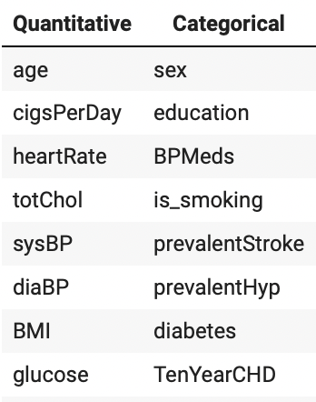
Before and after effect of removing the outliers:
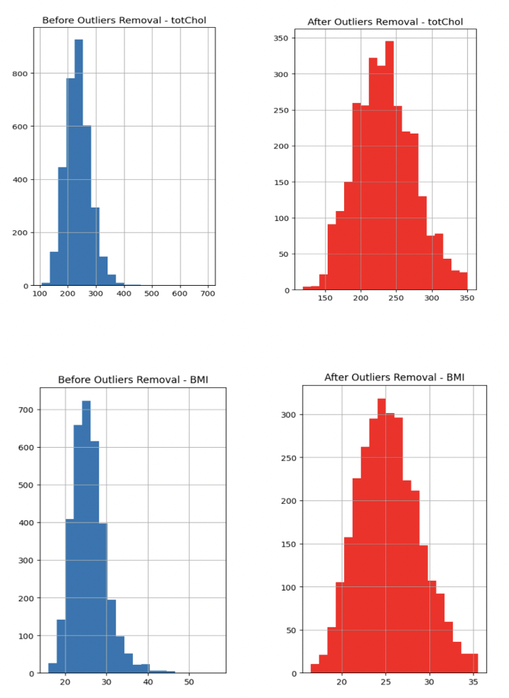
Standardizing Quantitative features:
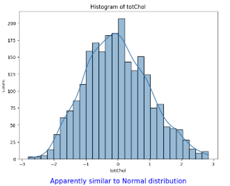
Heat Map before removing dependancies:

Heat Map after removing dependancies:

Our model accuracy:
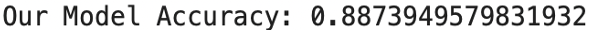
Standard python package's accuracy:
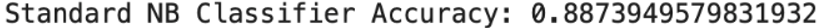
Web Development:
Admin of the Prosthetics Department in a hospital.
- It consists of ten frames which are Login, Home, Suppliers, Doctors, Patients, Prosthetics, Orders, Operations, Supplied by and Logout.
- I added various validations to prevent error, enhance both security and user experience and avoid data loss. For an example, the Login page will not be directed
to the home page unless the user entered the correct username and password. To add, when creating a new record in any of the tables, all of the fields must be filled
with the correct data types.
- I also made sure to link the tables to each other using foreign keys. To elaborate, the operations table has the doctor, patient and the prosthetic required for each
operation as foreign keys attributes linked to the doctors, patients and prosthetics databases. As a result, the drop-down list that appears when updating an existing
record or creating a new record contains only the information that is present in the other tables.
- I added a search bar that searches based on the name.
Login page:
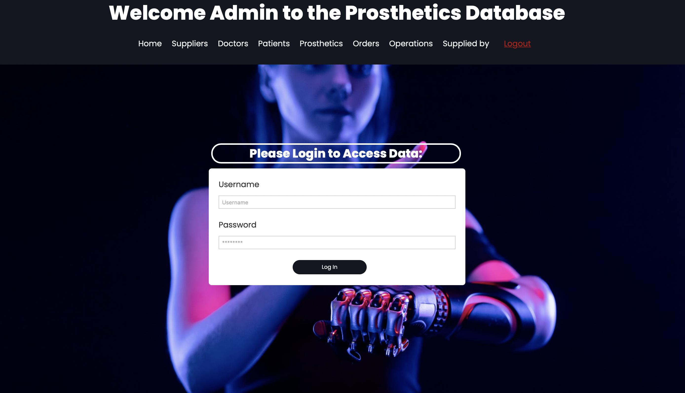

Home Page:

Suppliers:
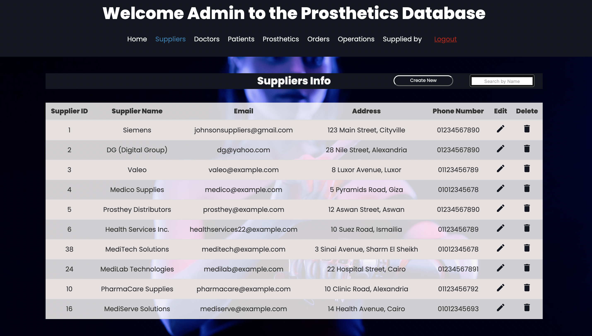
Doctors page:
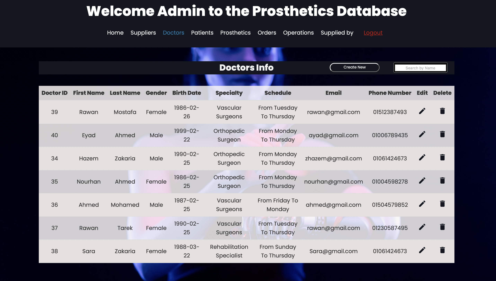
Patients page:
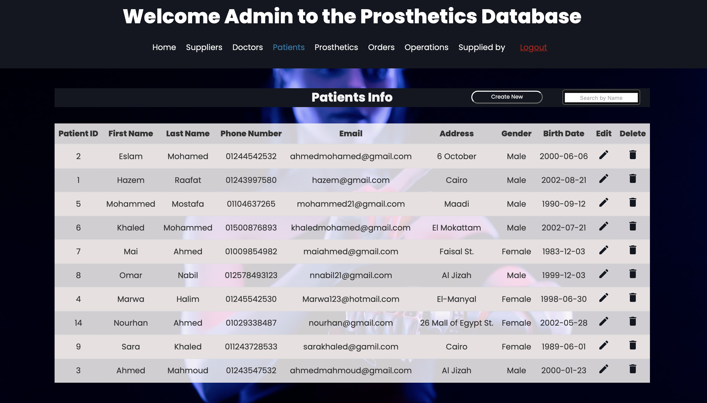
Operations page:
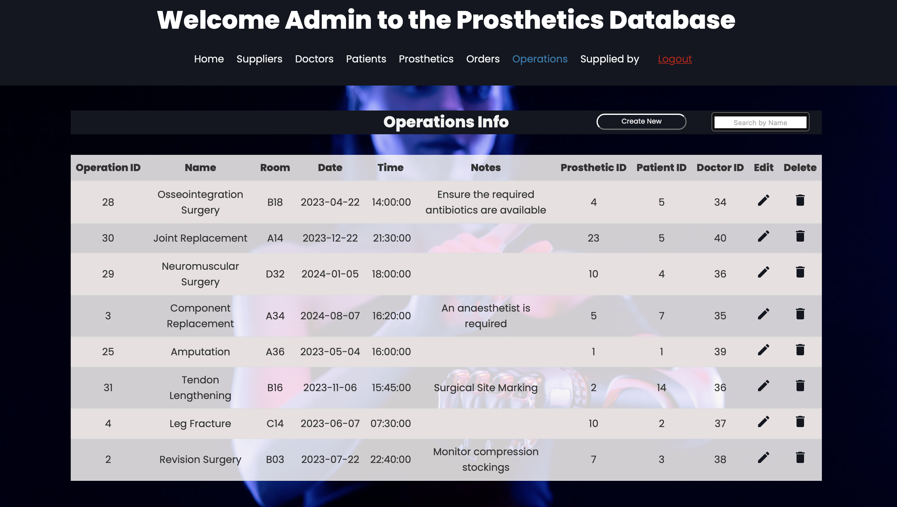
Create an operation with some validations that are also applied to the rest of the tables:


Update an operation:


Delete an operation record:

Search a record by name:
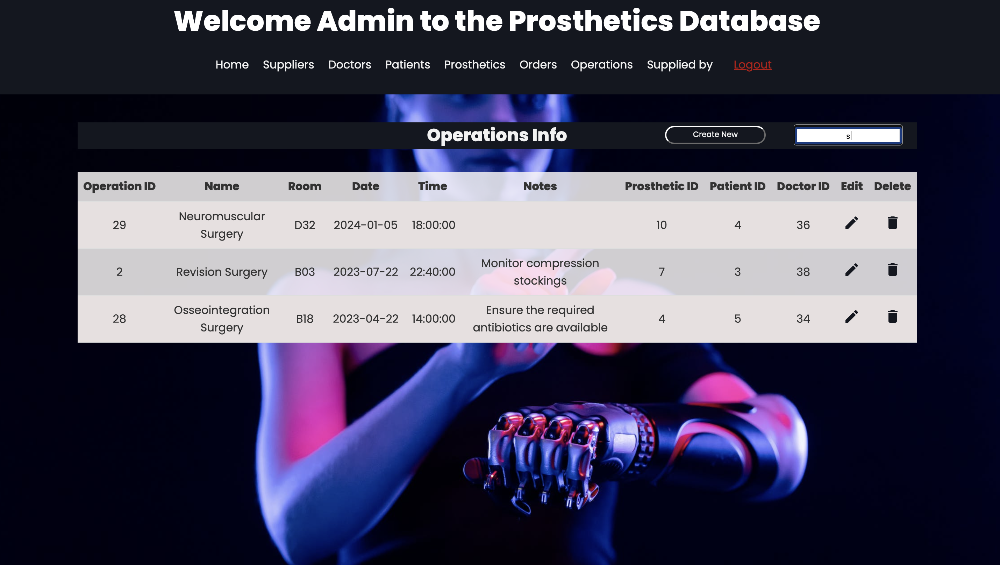